GE Exclusive Use Only
Direction 5440000, Rev# 5
Signa HDxt Service Methods
Module Version 4.0, Version Date 6/3/10
GE Exclusive Use Only |
| Required Persons | Preliminary Reqs | Procedure | Finalization |
|---|---|---|---|
| 1 | 5 mins | 45 mins | Not Applicable |
| Item | Qty | Effectivity | Part# | Manufacturer | |
|---|---|---|---|---|---|
| MR Applications CD-ROM | 1 | - | - | - | |
| Condition | Reference | Effectivity |
|---|---|---|
Operating System Load was completed. The concept “Load from Warm” does not exist for this system. Do not attempt to short cut the process by just loading MR Applications. | - | - |
Insert the MR Applications CD into the disk drive, and the CD will auto boot. When the message shown in Illustration 1 displays, click [Run Command].
Illustration 1: Run Command Pop-Up

Click [OK] after confirming that the DASM (if applicable) was powered Off. (See Illustration 2.)
Illustration 2: DASM Off Message

Wait for the system to reboot. It will probe hardware, partition the hard drives, and then reboot.
When a message dialog box in Illustration 3displays, click [OK] to close it.
After the system reboots, the Linux desktop displays and the Guided Install screen (shown in Illustration 3) automatically launches about two minutes later.
Illustration 3: Guided Install Screen
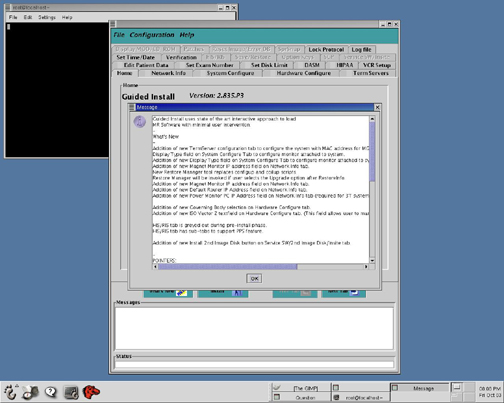
Insert the SaveInfo MOD into the MOD drive, and click [OK] when the message (shown in Illustration 4) displays.
Illustration 4: Load Guided Install Configuration

Once the GI Configuration load is complete, the Guided Install Verification tab (shown in Step ) displays.
If the SaveInfo was performed on an 11.1 system that generated an IIS key, the Verification tab should activate the [Install Software] button shown in Step .
If this button is not active, address any failing issues that exist before proceeding. (For help using Guided Install, see Host Reconfiguration.)
The MGD Term Server MAC address can be found on the module as shown in Illustration 5
| NOTE: | The system will ask to enable High Order Shim from Guided Install. Only enable the High Order Shim if the site is a TwinSpeed equipped with the High Order Shim option. |
Illustration 5: MGD Term Service MAC Address Location

Verify that the MR Applications CD is inserted and click [OK]. (See Illustration 6.) MR Applications takes about 5 minutes to load.
Illustration 6: Verify Insertion of MR Applications CD
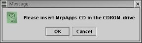
Once the software installation is complete, remove the MR Applications CD from the disk drive and click <OK>. (See Illustration 7.)
Illustration 7: Software Installation Completed

Insert the SaveInfo MOD into the MOD drive. From the Guided Install, select the Save/Restore tab. Click the [Restore Information] button shown in Illustration 8.
Illustration 8: Save/Restore Tab

Select [Restore all files automatically], and press [Continue] shown in Illustration 9.
Illustration 9: Restore Selections

When it finishes and the message shown in Illustration 10displays, click <OK> to run Update Utility.
Illustration 10: Update Utility Pop-Up

When the message displays asking, Do you want to quit the tool, click <Yes>.
When the message, Log file (restore.log) has been created in /usr/g/service/log directory displays, click <OK>.
To restart the system, select [File] and [Quit], and click [Yes] when asked to confirm. (The system will reboot, and all changes made during the restore process will be set.)
After the system reboots, log in as root with the password: operator.
Click [Yes] to invoke Guided Install. (See Illustration 11.)
Illustration 11: Invoke Guided Install
| ||||
| Restricted or Advanced Software must be loaded prior to loading Service Packs. | ||||
Insert the Restricted or Advanced Service Software CD into the drive, and click the appropriate [Load Restricted Software] or [Load Advanced Software] on the Service SW/Insite tab. (See Illustration 12.)
Illustration 12: Load Proprietary Software
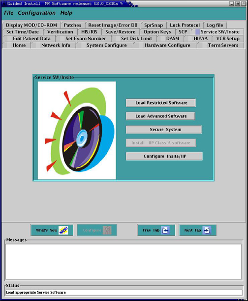
Read the proprietary statement shown in Illustration 13, and click the numbered buttons: [1], [2]and [3] in order.
Illustration 13: Proprietary Statement
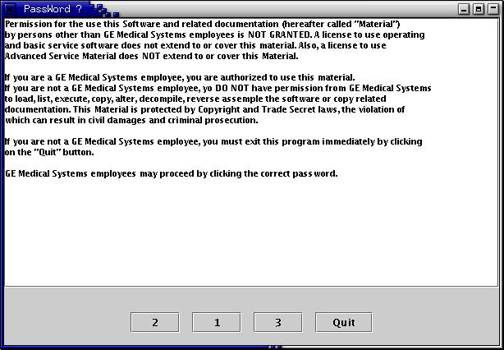
| ||||
Before loading Advanced or Restricted Service software, make
sure the service key is inserted. If the service key is not inserted:
| ||||
When asked to insert the CD-ROM, confirm the Service Software disk is in the drive, and click [OK]. The load takes about 3 minutes.
| ||||
| InSite should only be configured after the service pack is installed. The following step does not display when loading Advanced software. | ||||
Once complete, the system will launch the InSite configuration. Click [Accept] three times.
From the InSite Interactive Platform Configuration screen, click [Exit] and continue to the patch installation. (See Installing Software Patches and Service Packs.)
After the system reboots, log in as root with the password: operator.
Click [Yes] to invoke Guided Install. (GE Healthcare Field Engineers loading Restricted or Advanced Service Software should configure InSite at this time.)
The instructions in this section go through the minimum amount of screens to enable the basic functionality needed to enable Proactive Diagnostics (ProDiags) and complete an InSite checkout with the OnLine Center (OLC). For information on a Custom set up in the InSite Configuration GUI, refer to Insite/IIP Installation.
| NOTE: | ProDiags is defaulted to call out to the ASC daily. If
the attempt to call out fails, the software re-attempts to call out
hourly until successful. If the modem or network connection is down,
these hourly attempts to call out can slow down the scanner. It is
suggested that during InSite IIP setup, the ProDiags call-out to ASC
be configured to dial out weekly and re-attempt daily. Due to software changes at the OLC to support iLinq (formerly called InSite Interactive), all 8.3 and higher systems must initially do a Manual Checkout (i.e., FE must call the OLC for initial check out.) Once this is done, the Auto Checkout feature can be used for future reloads. |
Following acceptance, the main tabs are initialized. (See Illustration 14.)
Illustration 14: Information Tab - Instructions Sub Tab
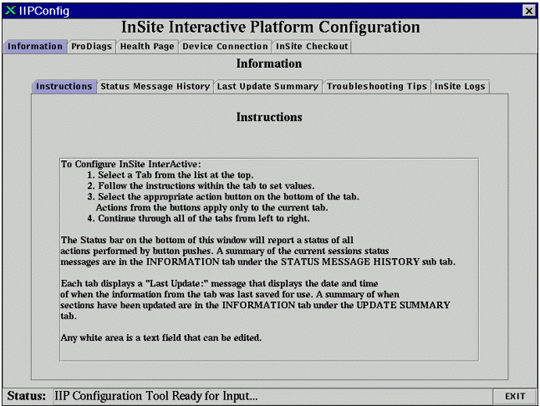
If an InSite modem or broadband connection is not available or it will be configured later, select [Exit] and go to Step 14.
Select the ProDiags tab to display the screen shown in Illustration 15.
Click [Default] to configure the ProDiags feature with default schedules provided with the software. A status message, ProDiags Auto Setup: Completed Successfully, should display at the bottom of the screen.
Illustration 15: Proactive Diagnostics Tab
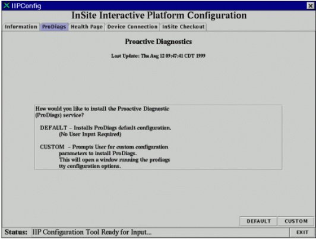
When the Health Page (shown in Illustration 16) displays, click in the Enter Address List field.
Illustration 16: Health Page
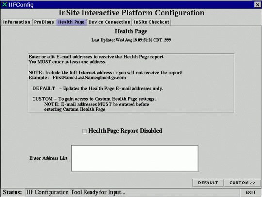
Type a valid e-mail address with the format name@location into the Enter Address List field. Do not press the <Enter> key.
| NOTE: | The format for GEMS e-mail addresses is: firstname @med.ge.com. Enter the correct e-mail address(es) as all e-mail addresses are saved to the /usr/g/config/healthpg.adr file in the format: user[#]=email address. |
Select the [Default] button to configure Health Page with the default schedule file.
The Device Connection screen displays with the status message, Health Page Email… Completed Successfully.
Select the appropriate Connection Device Type: Network or Modem. (See Illustration 17.)
For a network connection, enter the IP Address where indicated in Illustration 17.
For a modem connection, refer to Illustration 18 and select a Dial-out Prefix or type a site-specific prefix in this field.
Illustration 17: Device Connection Tab - Network or Modem
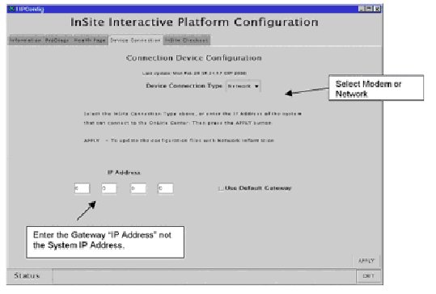
Illustration 18: Dial-out or Site-Specific Prefix for a Modem
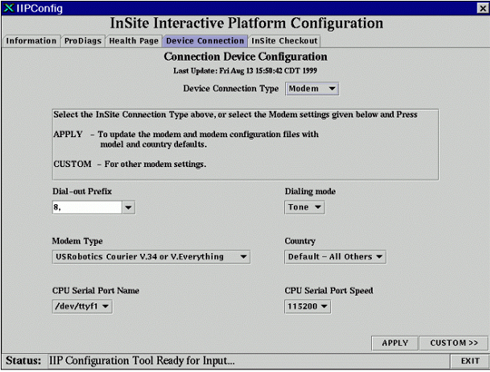
| NOTE: | Dial-out prefixes may be required on some sites to get
a line outside of the hospital. 9,1 is the
most common and the default. If a mistake is made while configuring the Device Connection tab, and the wrong Dial-out Prefix is entered, it may be necessary to run a Secure from the Service S/W tab and reload the Service Software. |
Select the Modem Type available at your site. (The Modem Type was recorded in the System Options Data Table.)
Select [Apply] to set up registers on the modem, and store values to the modem's NVRAM. When the [Apply] button is selected, the Modem Readme screen (shown in Illustration 19) displays for the selected modem type.
Illustration 19: Modem Readme Screen (Example for V.34 Selection)
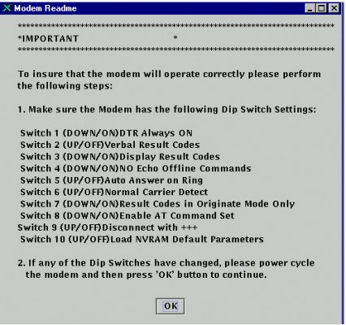
| NOTE: | The InSite Configuration may recommend different switch settings for the modem as compared to the settings that worked with the previous release of software. Verify the modem switch settings match those recommended in the InSite Configuration. |
After properly verifying/configuring any switches or other modem parameters on the modem, select [OK], which will do the programming of the modem. The InSite Checkout tab (shown in Illustration 20) displays.
Illustration 20: InSite Checkout Tab
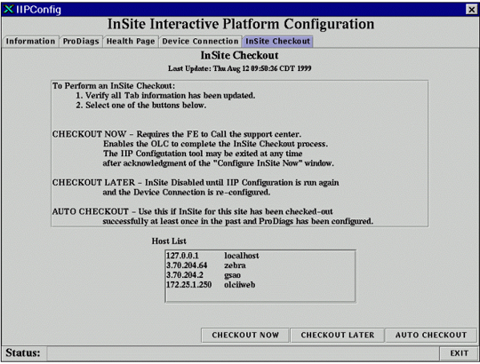
Click [CHECKOUT NOW]. The InSite Checkout tab allows the user to complete the InSite configuration process.
| NOTE: | [CHECKOUT NOW] configures PPP to allow a dial-in connection from the OLC. The user must call the local OLC to complete the checkout. |
If an InSite Checkout cannot be completed at this time, select [Cancel] followed by [Exit]after clicking [CHECKOUT NOW]. This will display the Exit Confirmation window shown in Illustration 21.
Select [OK] to exit the InSite Configuration GUI. Exiting in this manner leaves the serial port of the computer enabled allowing the OLC to complete the checkout at a future time without requiring an FE on site.
Illustration 21: Configure InSite Now Requester
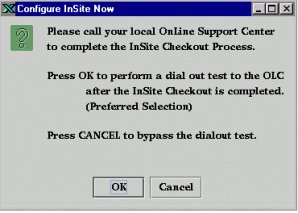
| NOTE: | When the user selects the [CHECKOUT NOW] button, the Configure InSite Now window displays.
(This provides the user the option to run a dial-out test upon completion
of the InSite Checkout Process.) When the dial-out test is in the process of connecting to the AutoSC, the IIP Configuration GUI will not update and may seemr locked up until the connection to the AutoSC is complete or the connection times out. Be patient.
|
Never select either of the following buttons:
[DISABLE INSITE] since this disables PPP, and will require an FE to be on site to invoke this screen so the OLC is able to complete an InSite Checkout.
If selected by mistake, the user MUST rerun the IIP Configuration Tool, click the [Apply] button on the Modem tab, and the [CHECKOUT NOW] button to enable PPP for dial in.
[AUTO CHECKOUT] since a manual checkout is required to update to the latest model type in the OLC database.
The RestoreINFO process restores the /usr/g/insite/sclink.cfg file, needed for Auto Checkout to work. This button is only active if a sclink.cfg file exists in the directory above.
After [OK] is selected, an updated summary shown in Illustration 22 is provided.
Illustration 22: Exit Confirmation Requestor
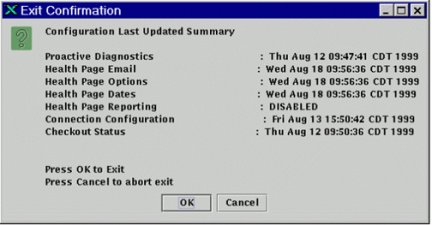
A valid date/time should be displayed for each function that was successfully configured. If any function shows NO FILE, that function was not properly configured.
Select the [OK] button to exit the IIP Configuration Tool.
Wait for the message Restricted Service load done in the Install GUI status bar at bottom of window.
Insert the MOD with the saved protocols.
Select the Save/Restore tab, and click the [Restore Protocol] button.
To exit Guided Install, select [File] then [Quit], and answer [Yes]. (If any error conditions still exist, Guided Install will force a fix of the errors or the changes will not be saved.)
To log out of the system, right click on the desktop and select [Logout], and click [Yes] when the next prompt displays.
Log back in as user: sdc and password: adw2.0.
Reconnect the DASM if required.
Restore YP Networking if required.